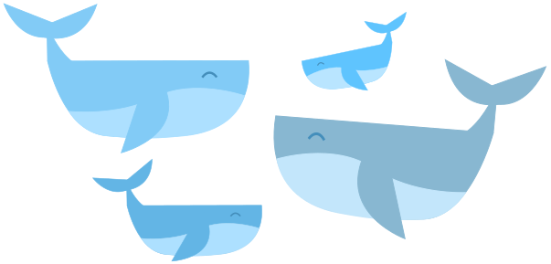

Geisternetze sind Fischernetze, die im Meer versorgt wurden oder verloren gegangen sind.
Jedes Jahr bleiben 300.000 Wale und Delfine in Netzen stecken und sterben, weil sie
verhungern, ersticken oder zu erschöpft sind.
Weil die Wale lange versuchen von den Netzen freizukommen, fehlt es ihnen oft an
Ressourcen, die sie brauchen, um größer oder schwerer zu werden.
Sie haben auch keine Energie mehr, um Babys zu kriegen/zeugen.
Soziales
Wale gehen in die Schule.
Wale leben in Schulen.
Viele Wale leben in Gruppen zusammen, die man auch Schulen nennt.
Sie gehen gemeinsam mit ihrer Gruppe jagen, unterhalten sich miteinander und haben eine starke soziale Bindung zueinander.
